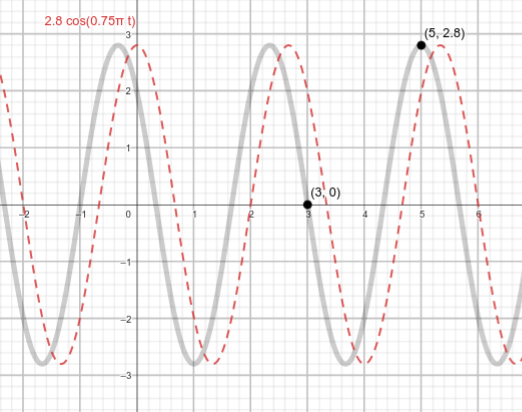

Um sistema massa-mola é um modelo físico que descreve o comportamento vibratório de um objeto ligado a uma mola. Ao aplicar conceitos da teoria de equações diferenciais ordinárias, podemos resolver a equação diferencial que governa o sistema e determinar a posição da massa em relação ao tempo, possibilitando compreender e prever o movimento oscilatório do sistema massa-mola.
A modelagem de um sistema massa-mola envolve a aplicação da Lei de Newton e da Lei de Hooke. A Lei de Newton descreve a relação entre a força resultante em um objeto, sua massa e sua aceleração. Ao considerar a força exercida pela mola, de acordo com a Lei de Hooke, que estabelece que a força é proporcional ao deslocamento da mola em relação à posição de equilíbrio, é possível estabelecer a equação diferencial que governa o movimento do sistema. A partir dessa equação, é possível obter a solução que descreve a posição da massa em relação ao tempo, permitindo analisar as propriedades vibratórias e oscilatórias do sistema massa-mola.
Neste link é possíel obter maiores detalhes da modelagem física do problema e entender como pode-se obter a equação que governa o sistema massa-mola, que está descrito abaixo:
O gráfico abaixo foi obtido a partir do movimento de um corpo com massa de 10 kg ligado a uma mola. Sabendo que o eixo das abicissas representa a variável t (tempo) e o eixo das ordenadas representa a variável x (deslocamento), calcule:
Utilize 4 algarismos significativos para responder o problema.
A partir do gráfico é possível verificar que:
A função que descreve o movimento é cíclica e no intervalo [3;5] observa-se que o movimento completou 3/4 de ciclo. Se em 2 segundos o sistema completa 3/4 de ciclo então para completar um ciclo inteiro é necessário (2 * 4)/3 segundos. Assim, a frequência do sistema é 3/8 Hz, e a frequência angular é rad/s
A equação que governa o sistema é uma equação diferencial linear homogênea de segunda ordem com coeficientes constantes. Para resolvê-la, primeiro propomos uma solução da forma:
Onde A e r são constantes a serem determinadas. Para substituir esta solução proposta na equação diferencial, primeiramente precisamos calcular a derivada de x em relação a t de segunda ordem:
Substituindo na EDO que governa o sistema temos:
Realizando manipulações algébricas obtemos:
Resolvendo essa equação quadrática para r, obtemos:
Onde i é a unidade imaginária. As soluções para a equação diferencial original são então dadas pela fórmula geral para a solução de uma equação diferencial linear homogênea de segunda ordem com coeficientes constantes:
No entanto, geralmente é mais útil expressar a solução em termos de funções seno e cosseno, usando a fórmula de Euler
Fazendo isso, obtemos a solução em uma forma mais familiar:
Onde é a amplitude do movimento, é a frequência natural angular do movimento, que foi determinada no item anterior, e é a fase inicial.
As constantes e podem ser determinadas pelas condições iniciais do problema. A equação que representa a solução do problema tem a seguinte forma:
A amplitude é facilmente determinada a partir do ponto de pico em t=5, onde x=2.8, logo, C = 2.8
Podemos traçar um gráfico com as informações que já temos, sendo necessário apenas corrigir a fase phi
É possível observar que 2,8*cos(3pi/4 * 5 - phi) = 2,8*cos(0)
Logo, phi = 15pi/4
Substituindo t por 10 obtemos
Com a equação da posição completamente descrita, pode-se obter a equação da velocidade a partir de sua derivada no tempo
Se t = 2, x'(t) = (2,8*3*pi/4)*sen(-9*pi/4) = - 4,665
Isolando t da solução do problema
e substituindo x(t) por 2 temos:
A variável t possui infinitas soluções, mas é possível observar que, para um valor fixo de t, a velocidade (inclinação da reta tangente ao gráfico da posição) sempre tera mesmo valor absoluto.
Portanto, qualquer solução para o problema é adequado para dar prosseguimento aos cálculos, e utilizaremos o valor:
t = 5,329
Substituindo este valor na equação de x'(t) obtemos:
A frequência angular vale 3 pi / 4. elevanto a ao quadrado temos 9 pi² / 16. multiplicando pela massa temos 90 pi² q 16. então k = 55,52
O gráfico iterativo abaixo apresenta uma curva cinza que foi descrita no enunciado da questão e uma curva azul que tem parâmetros que podem ser alterados. Observe o comportamento do gráfico e tente sobrepor as curvas para obter os mesmos resultados obtidos anteiormente.
Para se aprofundar em frequência: batimento